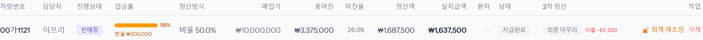
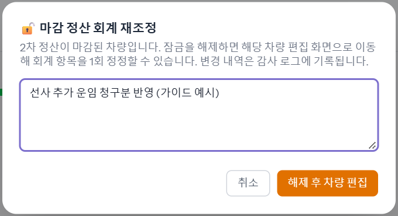
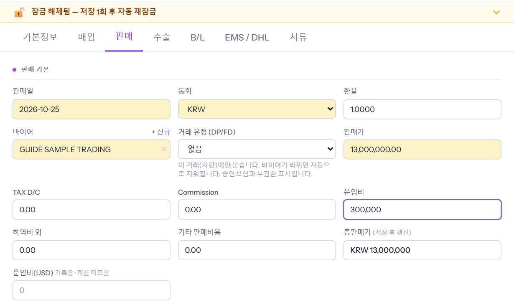
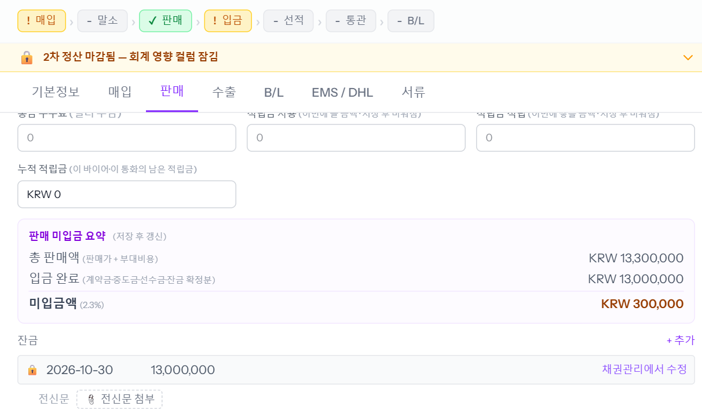

2차 정산까지 마감한 차는 금액 칸(판매가 · 운임비 · 환율 · 비용 등)이 잠깁니다. 마감 뒤에 선사 추가 운임처럼 고칠 일이 생기면 정산 화면에서 「회계 재조정」으로 잠금을 한 번 풀고 차 창에서 고칩니다. 예시 차량 00가1121 — 마감 뒤 운임비 300,000원을 넣었습니다.
① 잠금 풀기 — 정산 관리
1단계
정산 관리에서 차를 찾아 줄 끝의 [🔓 회계 재조정]
2차 정산이 「최종 마무리」(마감)된 줄에만 버튼이 보입니다.

2단계
사유를 10자 이상 적고 [해제 후 차량 편집]
사유는 감사 기록에 남습니다. 누르면 그 차의 편집 창이 바로 열립니다.

② 고치기 — 차 창
3단계
위에 「잠금 해제됨 — 저장 1회 후 자동 재잠금」이 보이면 칸을 고치고 [수정 저장]
예시는 「판매」 탭의 운임비에 300,000 을 넣었습니다. 「판매 정보 확인」 창이 뜨면 [확인 후 저장].

- 한 번만 — 저장하면 바로 다시 잠깁니다. 고칠 칸을 모두 고친 뒤 한 번에 저장합니다.
- 5분 — 풀고 5분 안에 저장하지 않으면 다시 잠깁니다. 그때는 1단계부터 다시.
③ 새로 생긴 미수 받기
4단계
매출을 늘렸으면 그만큼 미수가 생깁니다 — 돈이 들어오면 잔금 [+ 추가]
다시 열면 띠가 「2차 정산 마감됨 — 회계 영향 컬럼 잠김」으로 돌아와 있고, 「판매 미입금 요약」에 새 미수(예: 300,000)가 보입니다. 미수가 남아 있는 동안은 마감된 차라도 잔금 줄을 추가할 수 있습니다. 정산 목록 입금률 칸에도 「받을 ₩300,000」이 보입니다.

알아 둘 것
- [회계 재조정]은 관리(본인 팀 차) · 업무관리자 이상이 쓸 수 있습니다. 재무는 버튼이 안 보입니다 — 관리에게 요청합니다.
- 재조정은 기록을 바로잡는 것입니다. 이미 나간 지급액이 다시 계산되지는 않습니다(3차 정산 없음).
- 운임비 · 기타 판매비용은 담당자 정산 마진에 안 들어갑니다 — 미수(받을 돈)만 늘어납니다.
- 바꾼 값은 차마다 감사 로그에 남습니다.